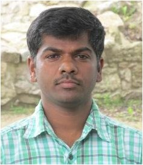
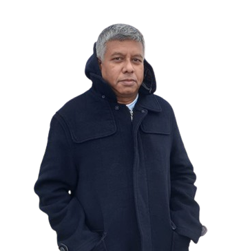
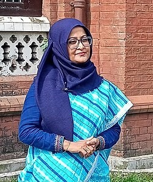

Program Schedule
You can download the complete program schedule below:
📄 Download Program Schedule
Conference Topics
Roots and Revolutions
- ECOFEMINISM, YOUTH LEADERSHIP, LOCAL ACTION & ENVIRONMENTAL EDUCATION
- WOMEN IN ENVIRONMENTAL CONSERVATION & LEADERSHIP
- YOUTH ACTIVISM & CLIMATE MOVEMENTS
- COMMUNITY-BASED ADAPTATION & LOCAL SOLUTIONS
- ENVIRONMENTAL EDUCATION & AWARENESS
- TRADITIONAL KNOWLEDGE & CULTURAL RESILIENCE
Wild and Well
- BIODIVERSITY, ECOSYSTEMS, AND NATURE CONSERVATION
- BIODIVERSITY HOTSPOTS & SPECIES PROTECTION
- ECOSYSTEM RESTORATION & REHABILITATION
- PLANETARY HEALTH, MARINE & COASTAL ECOSYSTEM MANAGEMENT
- FRESHWATER ECOSYSTEM & POLLUTION CONTROL
- FOREST CONSERVATION & WILDLIFE CORRIDORS
Voices for Earth
- ENVIRONMENTAL JUSTICE, GOVERNANCE & COMMUNITY EMPOWERMENT
- ENVIRONMENTAL AGREEMENTS & NEGOTIATIONS
- ENVIRONMENTAL GOVERNANCE
- LAW & POLICY IMPLEMENTATION
- CLIMATE JOURNALISM & PUBLIC COMMUNICATION
- JUSTICE, EQUITY & INDIGENOUS RIGHTS
- ENVIRONMENTAL ETHICS & ACCOUNTABILITY
Planet in Balance
- CLIMATE MITIGATION & ADAPTATION
- CLIMATE-INDUCED MIGRATION & DISPLACEMENT
- CLIMATE SMART AGRICULTURE & FOOD SECURITY
- ECOSYSTEM-BASED ADAPTATION & NATURE-BASED SOLUTIONS
- URBAN RESILIENCE & HEAT MITIGATION
- WATER RESOURCE MANAGEMENT & DROUGHT RESILIENCE
Green Futures
- SUSTAINABLE DEVELOPMENT & GREEN ECONOMY INNOVATION
- CIRCULAR ECONOMY & RESOURCE EFFICIENCY
- RENEWABLE ENERGY & JUST TRANSITION
- ECO-TOURISM, ECOPRENEURSHIP AND WASTE TO WEALTH
- REMOTE SENSING & GEOSPATIAL TECHNOLOGIES
- AI & BIG DATA FOR CLIMATE ACTION
- NANOTECHNOLOGY, BIOTECHNOLOGY & GREEN / ENVIRONMENTAL CHEMISTRY
Speakers
Dr. Rubana Huq
Vice Chancellor, Asian University for Women

Sonia Sultana
Director, Department of Environment, Chattogram Metropolitan Office

Professor Amilan Jose Devadoss
National Institute of Technology - Kurukshetra, India

Dr. Abu Syed
C4RE, Bangladesh

Dr. Gawsia W. Chowdhury
Professor, Department of Zoology, Dhaka University
Conference Proceedings
All accepted abstracts, oral and poster presentation materials will be compiled into a digital conference proceedings book. Subsequently, proceedings will be published on AUW ICECA’s official website and shared with academic and civil society networks.